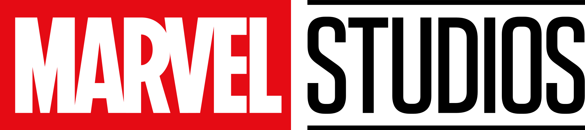
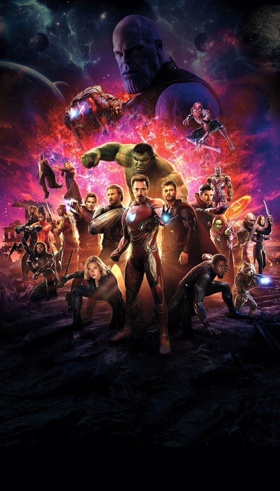
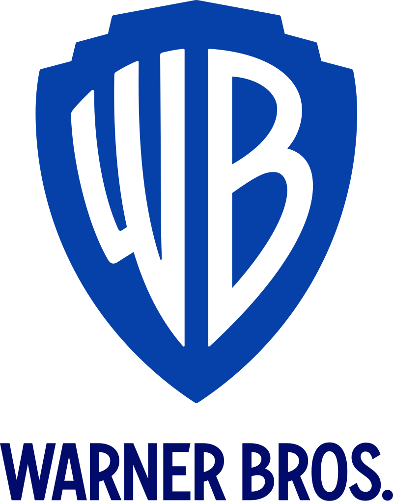
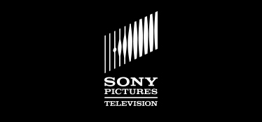

Зміст
- Створення
- Фільми
- Сага Нескінченності
- Сага Мультивсесвіту
- Майбутні
- Герої кіновсесвіту Marvel
- Офіційна хронологія
- Деякі цікаві факти Кіновсесвіту Marvel
- Культурний вплив
Створення
У 2005 році журнал Variety повідомив, що Marvel Studios почне виробляти свої власні фільми та буде поширювати їх через Paramount Pictures. Раніше студія виступала лише в ролі копродюсерів в екранізаціях придуманих ними персонажів (найбільш відомий семирічний договір з 20th Century Fox). Доходи, отримані від даних угод, керівництво Marvel вирішує вкласти у власну узагальнену франшизу, процес створення якої буде повністю під контролем студії. З цією метою було укладено поновлюваний кредитний договір строком на 7 років з Merrill Lynch на суму $525 млн.
«Це одночасно і страшно, і весело. Це щось, чого ніхто ніколи раніше не робив, і саме завдяки цьому духу новизни всі з ентузіазмом приймають такий підхід. Інші режисери не звикли залучати вже ангажованих акторів з інших фільмів, робити прив'язки до певних сюжетних ліній або до місця, але я думаю … всі в підсумку погодилися на це і вважають, що це весело. В основному тому, що ми незмінно продовжуємо стверджувати: фільм, над яким ми працюємо зараз — понад усе. Всі наші „зв'язки“ — все це весело і також буде дуже важливим, якщо ви того захочете. Якщо шанувальники захочуть заглянути далі і побачити більш глибокий зв'язок — він буде там. Є й кілька очевидних „зв'язків“, за якими, ми сподіваємося, зможе слідувати і основна аудиторія. Але … причина, по якій всі режисери погодилися брати участь в цій затії — в тому, що їхні фільми повинні бути конкурентоспроможними самі по собі. Їм потрібен свіжий погляд, унікальний тон, та той факт, що вони можуть бути пов'язані між собою, якщо глядач хоче йти по цих слідах з хлібних крихт — бонус».
— Кевін Файгі, глава виробництва Marvel Studios, про структуру загального кіновсесвіту.
Президент Marvel Studios Кевін Файгі згадав, що пропонувалося назвати цю серію фільмів як «Marvel Cinema Universe», але вибрали інший термін — «Marvel Cinematic Universe». Перші фільми поширювалися за допомогою Paramount Pictures та Universal Pictures. Починаючи з 2012 року дистриб'ютором фільмів стає Walt Disney Pictures, купивши до цього часу компанію Marvel Entertainment, яка стала підрозділом The Walt Disney Company.
Компанія The Walt Disney Company 20 березня 2019 року купила 21st Century Fox за $71,3 млрд — до прикладу бюджет України на 2019 рік — $40 млрд. До складу 21st Century Fox входить голлівудська кінокомпанія 20th Century Fox — яка своєю чергою володіє правами на героїв коміксів таких як Фантастична четвірка, Люди Ікс, Росомаха, Дедпул, Магнето, Гамбіт, Кейбл, Срібний серфер, Доктор Дум, Ґалактус та інші.
Після Таноса новим головним ворогом Месників може стати Галактус, Канг-Завойовник, Магнето або Апокаліпсис (але для введення цих персонажів буде потрібно кілька фільмів передісторії).
Тепер у Marvel Studios досить персонажів для адаптації таких сюжетів, як «Таємне вторгнення», «Анігіляція», «Громовержці», «Темне правління», «Ініціатива Месників»; Marvel Studios нарешті може представити Ілюмінатів у кіновсесвіті Marvel.
Фільми
Фільми кінематографічного всесвіту Marvel (англ. Marvel Cinematic Universe) об'єднують разом безліч героїв з різних фільмів, заснованих на коміксах компанії Marvel і розроблених кінокомпанією Marvel Studios.
Сага Нескінченності
Сага нескінченності (англ. Infinity Saga) - сага про фільми, складені з перших двадцяти трьох фільмів Кінематографічного всесвіту Marvel, що охоплюють першу, другу і третю фази. Сага почалася з фільму Залізна людина і закінчилася фільмом Месники: Фінал. Головна тема саги - збирання каменів нескінченності та війна проти Божевільного Титана Таноса. За сагаю нескінченності йде Сага Мультивсесвіту.
Фільми. Сага Нескінченності.
Перша фаза:
- Залізна людина
- Неймовірний Халк
- Залізна людина 2
- Тор
- Перший месник
- Месники
Друга фаза:
- Залізна людина 3
- Тор: Царство темряви
- Перший месник: Друга війна
- Вартові галактики
- Месники: Ера Альтрона
- Людина-мураха
Третя фаза:
- Перший месник: Протистояння
- Доктор Стрендж
- Вартові галактики 2
- Людина-павук: Повернення додому
- Тор: Раґнарок
- Чорна Пантера
- Месники: Війна нескінченності
- Людина-мураха та Оса
- Капітан Марвел
- Месники: Завершення
- Людина-павук: Далеко від дому
Сага Мультивсесвіту
Сага Мультивсесвіту (англ. Multiverse Saga) - сага про фільми, що охоплюють четверту, п'яту та шосту фази. Сага йде після Саги нескінченності. Сага почалася з серіалу ВандаВіжен і закінчиться фільмом Месники: Секретні війни. Головна тема саги – занурення та вивчення мультивсесвіту та війна проти Канга Завойовника.
Фільми. Сага Мультивсесвіту
Четверта фаза
- Чорна вдова
- Шан-Чі та Легенда Десяти Кілець
- Вічні
- Людина-павук: Додому шляху нема
- Доктор Стрендж у мультивсесвіті божевілля
- Тор: Любов і грім
- Чорна пантера: Ваканда назавжди
Майбутні
Хоча назви низки майбутніх фільмів Marvel Studios, як-от «Чорна пантера: Ваканда назавжди» і «Людина-мураха та Оса: Квантуманія», трохи громіздкі, незабаром ми всі знатимемо їх як проєкти, що ознаменували кінець 4 фази кінематографічного всесвіту Marvel та початок фази 5. Окрім того, студія відчинила завісу 6 фази, яка поверне у кіновсесвіт фільми про «Месників». Кевін Файгі та решта команди Marvel Studios відвідали Comic-Con у Сан-Дієго, щоб розкрити подробиці того, як 4 фаза має завершитися пізніше цього року з «Чорна пантера: «Ваканда назавжди», а 5 фаза почнеться з третього фільму про «Людину-мураху».
Майбутні фільми
П'ята фаза
- Людина-мураха та Оса: Квантоманія
- Вартові галактики 3
- Марвели
- Капітан Америка: Новий світовий порядок
- Громовержці
- Блейд: Вбивця вампірів
Шоста фаза
- Дедпул 3
- Фантастична четвірка
- Месники: Династія Канґа
- Месники: Таємні війни
Герої кіновсесвіту Marvel
У фільмах і телесеріалах кіновсесвіту Marvel представлено багато центральних персонажів на всіх етапах. Перші три фази відомі як «Сага нескінченності», за ними слідує четверта фаза, яка є початком "Саги мультивсесвіту".
Перша фаза зосереджена на шести особах, які стають Месниками (Тоні Старк, Стів Роджерс, Тор Одінсон, Брюс Беннер, Наташа Романова, Клінт Бартон) разом з Ніком Ф'юрі, лідером Щ. И. Т. а, який відповідає за ідею створення команди. Ще одним центральним персонажем є Локі, лиходій, який спочатку спричинив формування Месників, щоб зірвати його плани світового панування.
Друга фаза знову зосереджується на перших Месниках і Ф'юрі разом з новенькими членами команди (Джеймс Роудс, уперше з'явився в Першій фазі, Сем Вілсон, П'єтро Максимов, Ванда Максимова і Віжен). На цьому етапі також представлені Вартові Галактики (Пітер Квілл, Ґамора, Ракета, Ґрут і Дрекс) і Скотт Ленг.
Третя фаза повертає всіх центральних персонажів як першої, і другої фази. Вона починається з того, що фокусується на розділенні оригінальних Месників (як було показано раніше в ранніх фазах) за участю нещодавно доданих супергероїв, таких як Бакі Барнс (вперше з'являється у фазі 1 та фазі 2), Скотт Ленг, Т'Чалла та Пітер Паркер. Походження Ніка Ф'юрі розкрито, і Локі грає більш нейтральну роль у третій фазі. Танос (що був коротко показаний у першій і другій фазах виконує роль головного антагоніста третьої фази. Гоуп ван Дайн (як видно у другій фазі) приєднується до Скотта Ленга як партнерів-супергероїв. Стівен Стрендж і Вонг також представлені як члени нової формації Майстрів містичних мистецтв, які встають на бік Месників і Вартових Галактики, щоб перемогти Таноса. Вартові Галактики отримують нових членів з Мантіс та Небулою (яка спочатку була лиходієм у другій фазі, але пізніше спокутувала себе). Жіночі персонажі також частіше з'являються на екрані протягом третьої фази, особливо в передостанньому фільмі «Месники: Завершення», в якому героїчна роль відводиться Пеппер Паттс (із попередніх фаз), героям Ваканди Окоє і Шурі та Валькірії з Асґарда, а також новітній хедлайнер третьої фази, Керол Денверс. Ця фаза завершує історії Старка, Роджерса, Романової, Локі і Таноса, хоча минулі та альтернативні версії персонажів переходять у наступну фазу.
Четверта фаза починається з вивчення наслідків Саги нескінченності про життя месників, що залишилися, а також з введення нових героїв Шан-Чі, Місс Марвел, Вона-Халк, Місячний Лицар, Америка Чавес, Вічних (Серсі, Ікаріс, Кінґо, Спрайт, Фастос, Маккарі, Друїґ, Ґільґамеш, Аяк і Тена), а також зануритися в передісторію Наташі Романової. Варіанту Локі 2012 року, представленому в «Месниках: Завершення», відводиться центральна роль, що веде до появи мультивсесвіту, що спостерігається та пояснюється Спостерігачем.
Офіційна хронологія
- 1939–1945 «Перший месник»
- 1946 «Агент Картер»
- 1995 «Капітан Марвел»
- 2010 «Залізна людина»
- 2011 «Залізна людина 2», «Неймовірний Халк», «Тор»
- 2012 «Месники», «Залізна людина 3»
- 2013 «Тор 2: Царство темряви»
- 2014 «Перший месник: Друга війна», «Вартові галактики», «Вартові галактики 2»
- 2015 «Месники: Ера Альтрона», «Людина-мураха»
- 2016 «Перший месник: Протистояння»[84], «Чорна Пантера», «Чорна вдова», «Людина-павук: Повернення додому»
- 2016–2017 «Доктор Стрендж»
- 2017–2018 «Тор: Раґнарок»
- 2018 «Людина-мураха та Оса», «Месники: Війна нескінченності»
- 2023 «Месники: Завершення», «ВандаВіжен»
- 2024 «Шан-Чі та Легенда Десяти Кілець», «Сокіл та Зимовий солдат», «Вічні», «Людина-павук: Далеко від дому», «Людина-павук: Додому шляху нема», «Соколине око»
- 2025 «Доктор Стрендж у мультивсесвіті божевілля»
- поза часом «Локі», «А що як...?»
Деякі цікаві факти Кіновсесвіту Marvel
Хто такий Джарвіс? — Хтось вважає, що це просто вигадане ім'я, яке є плодом фантазій Старка. Але Джарвіс (JARVIS) — це абревіатура, що має таку розшифровку англ. «Just A Rather Very Intelligent System» — укр. «просто досить розумна система».
Едвард Нортон був спочатку затверджений на роль Халка, але переговори між ним і Marvel Studios не увінчалися успіхом. У результаті, Нортон був замінений Марком Руффало.
Кріс Еванс відмовлявся від ролі Першого месника три рази, перш ніж дати згоду на участь. Переконували його самі директор і продюсер картини.
Роберт Дауні (молодший) і Маріса Томей (Тітка Мей) зустрічалися багато років тому. Саме Роберт порекомендував її творцям фільму на роль тітки Пітера Паркера.
На зніманні Месники: Війна нескінченності секретність була безпрецедентною. Пол Беттані розповів, що вже в сценарії фільму «Месники: Війна нескінченності» були закладені спеціальні фейковий сюжетні лінії та окремі сцени — настільки продюсери боялися витоку інформації. Актор Том Голланд отримував сценарій невеликими шматками. Виною тому — зайва балакучість актора: у 2017 році він поширив занадто багато інформації про фільм «Людина-павук: Повернення додому», де грав головну роль. Потім виявилося, що взагалі мало кому з акторів довірили прочитати сценарій цілком. Такої честі удостоїлися лише бездоганний Бенедикт Камбербетч і «залізний» ветеран Роберт Дауні (молодший).
Культурний вплив
Культура набуває соціального впливу передусім як необхідний аспект діяльності суспільної людини. Вона ґрунтується на соціальних засадах і передбачає організацію спільної діяльності людей, а отже, регулювання цієї діяльності певними правилами, нормами, акумульованими в традиціях, знакових і символічних системах тощо.
DC Entertainment та Warner Bros. Pictures
У жовтні 2012 року, після своєї законної перемоги над Джо Шустером за право володіння правами на Супермена, Warner Bros. Pictures оголосила про те, що вона планує просунутися у своєму довгоочікуваному фільмі Ліга Справедливості, об'єднавши таких супергероїв DC Comics, як Бетмен, Супермен і Диво Жінка. Передбачалося, що компанія прийме протилежний підхід від Marvel, випустивши окремі фільми для персонажів, після того, як вони з'являться в об'єднаному фільмі. Випуск Людина зі сталі у 2013 році повинен був стати початком нової загального всесвіту для DC, «заклавши основу для майбутнього виходу фільмів на основі DC Comics». У 2014 Warner Bros. оголосила випуск фільмів, аналогічно Disney і Marvel затвердивши дати фільмів на кілька років вперед. У тому ж році генеральний директор DC Джефф Джонс заявив, що «телевізійні серіали »Стріла" і «Флеш» матимуть окремий всесвіт від фільмів DC, пізніше, пояснивши, що — «ми дивимося на нього як на мультивсесвіт. У нас є свій телевізійний всесвіт і наш всесвіт, але всі вони співіснують. Для нас, творчо, мова йде про те, щоб дозволити кожному зробити кращий продукт, розповісти кращу історію, зробити кращий світ. У всіх є своє бачення і ви дійсно хочете, щоб було злиття (…). Це просто інший підхід [від Marvel]»
В травні 2016 року, Warner Bros. дав контроль над Розширеним всесвітом DC Джонсу і виконавчому Джону Бергу в спробі «уніфікувати розрізнені елементи фільмів DC» і наслідувати успіху Marvel. Ці двоє були зроблені продюсерами на фільм Ліга Справедливості, крім участі Джонса в декількох «сольних» фільмах, таких як постпродакшн Загін самогубців або процес створення сольного фільму про Бетмена. Після успішного випуску Диво-жінка в червні 2017 року DC вирішила почати оскаржувати загальний характер своїх фільмів, а президент DC Entertainment Діана Нельсон заявила: «Наш намір, безумовно, просуватися вперед, використовуючи можливості, щоб допомогти переконатися, що ніщо не розходиться таким чином, що це не має сенсу, але немає ніякої наполегливости щодо загальної сюжетної лінії або взаємозв'язку в цьому всесвіті … Рухаючись вперед, ви побачите, що універсальна кінострічка DC — це всесвіт, але такий, який виходить з серця творця фільму, який їх створює». Крім того, DC почав фокусуватися на фільмах, "повністю відокремлених від решти, встановлених повністю поза «Розширеним всесвітом DC» як частина нової мітки, причому перша зосереджена на Джокері
Sony Pictures
У лютому 2015 року Sony Pictures і Marvel Studios оголосили про те, що франшиза Людини-павука буде знову перезапущена новим фільмом, який буде спродюсований Файгі та Паскаль і вийде 07 липня 2017 року. Фільм вийде після того, як персонаж стане частиною кіновсесвіту Marvel і з'явиться в одному із його фільмів. Компанія Sony Pictures продовжить фінансувати картини про Людину-павука і займатися їх дистрибуцією, а також прийматиме підсумкові креативні рішення. Marvel Studios буде також розглядати можливості для інтеграції інших персонажів кіновсесвіту Marvel в майбутніх фільмах про Людину-павука. З цим оголошенням, продовження до «Нова Людина-павук 2. Висока напруга» були скасовані, а фільми-спінофи, засновані на Зловісній шістці, Веномі та жіночих персонажах всесвіту Людини-павука, «рухаються далі», хоча і без участі Файгі.
Академія
У вересні 2014 року Університет Балтимору оголосив навчальний курс, який розпочнеться у весняному семестрі 2015 року, що обертається навколо «Кіновсесвіту» Marvel, викладач Арнольд Т. Блумберг. «Media Genres: Media Marvels» аналізує «як серія Marvel пов'язаних між собою фільмів та телевізійних шоу, а також пов'язані ЗМІ та коміксів та Мономіф Джозефа Кемпбелла „Подорож Героя“[128], пропонують важливі уявлення про сучасну культуру», а також зусилля Marvel, "щоб створити життєдайний всесвіт сюжетних ліній, персонажів та їх передісторії.